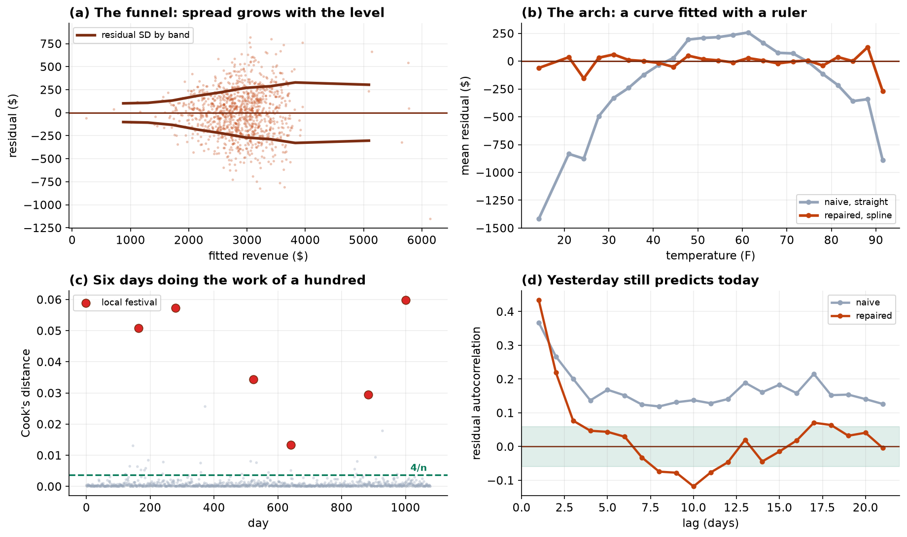

Sequential Diagnosis and Remediation of Four Regression Assumption Failures
Functional form, influence, error variance and serial correlation in a daily trading series, with a demonstration that each failure conceals the next.
Objective. To estimate the revenue effect of a daily promotion against a known cost of $200, and to demonstrate the dependence of standard regression diagnostics on the order in which they are applied. Methods. An initial specification regressed daily revenue on day of week, temperature entered linearly, promotion, public holiday and a linear trend over 1,079 trading days. Breusch-Pagan, RESET, Cook's distance and Durbin-Watson were computed on this model and re-computed after each remediation. Remedies applied in sequence were a B-spline basis on temperature, an indicator for local festival days, and Newey-West heteroskedasticity and autocorrelation consistent standard errors. Results. On the initial specification RESET returned p = 4 × 10⁻⁸, Durbin-Watson 1.265, and Breusch-Pagan p = 0.334. After the spline, RESET p = 0.69 and Durbin-Watson improved to 1.496 without modification of the error structure. Breusch-Pagan remained non-significant at p = 0.117 with all observations and returned p = 1.3 × 10⁻⁸ on removal of six festival days, and p = 7.1 × 10⁻¹⁸ once those days were modeled. The promotion estimate was +$295.4 (95% CI $235 to $356) initially and +$288.0 (HAC 95% CI $243 to $333) finally. The linear temperature coefficient of +$16.96 per degree (p = 7 × 10⁻¹⁰⁵) was replaced by a curve peaking at 67.3°F with a slope of approximately −$14.6 per degree above it. Conclusion. Applied in parallel to the initial model, the four diagnostics identify one of three present violations. The promotion inference was robust throughout; the temperature inference was sign-reversed over the upper half of the covariate range.
1. Data
Three years of daily observations. Fourteen duplicate rows arising from a repeated point-of-sale export were removed, five days without a till close-out were dropped, and eleven temperature values of −99 were voided as sensor sentinels, leaving 1,079 days. Revenue ranges from $183 to $6,310 and temperature from 12.6°F to 93.2°F.
2. Initial specification and parallel diagnosis
| Assumption | Test | Statistic | Conclusion |
|---|---|---|---|
| Homoskedasticity | Breusch-Pagan | p = 0.334 | Not rejected |
| Functional form | RESET (power 2) | p = 4.1 × 10⁻⁸ | Rejected |
| Influence | Cook's distance | max 0.056 | No single dominant point |
| Independence | Durbin-Watson | 1.265 | Positive serial correlation |
The failure of the homoskedasticity test to reject is the substantive result of this table. The residual vector at this stage is dominated by systematic misfit rather than by stochastic variation, and an auxiliary regression of squared residuals on the regressors has correspondingly little power to detect the variance structure.
3. Remediation in sequence
| Stage | Remedy | RESET | Breusch-Pagan | Durbin-Watson | R² | Residual SD |
|---|---|---|---|---|---|---|
| 0 | None | 4.1e-08 | 0.334 | 1.265 | 0.602 | $372 |
| 1 | B-spline on temperature, df = 5 | 0.69 | 0.117 | 1.496 | 0.723 | $311 |
| 2 | + festival indicator | 0.041 | 7.1e-18 | 1.131 | 0.810 | $258 |
Two features of this table warrant comment. First, Durbin-Watson improves from 1.265 to 1.496 at stage 1 with no change to the assumed error structure. A smooth misspecification generates runs of same-signed residuals that are indistinguishable from positive serial correlation, so a portion of the apparent dependence was attributable to functional form. Diagnosing serial correlation before correcting the mean would have prompted an unnecessary dynamic specification.
Second, the Breusch-Pagan statistic changes from non-significant to overwhelmingly significant between stages 1 and 2 without any change to the variance structure of the data. The mechanism is direct: six festival observations with residuals of several thousand dollars raise the pooled residual standard deviation from $253 to $309, a 22% inflation applied uniformly across the auxiliary regression. Fitting the same stage-1 model with those six observations excluded returns p = 1.3 × 10⁻⁸, confirming that the pattern was present throughout and masked.
Diagnostic tests are computed on residuals, and residuals are a function of the fitted model. A test therefore measures the assumption it names only to the extent that the remaining assumptions hold. This makes the order of application material, and a parallel checklist applied once to an initial specification will systematically under-detect.
The stage-2 RESET of p = 0.041 is not treated as evidence of remaining misspecification. At n = 1,079 the test has power against departures of no practical magnitude, and the binned residual means against temperature are flat to within a few dollars across the range. The stage-2 maximum Cook's distance of 0.332 likewise reflects the festival indicator being identified from six observations rather than a defect.

4. Covariance estimation
| Estimator | Assumes | Estimate | SE | 95% CI |
|---|---|---|---|---|
| Classical OLS | Homoskedastic, independent | +288.0 | 21.3 | [246, 330] |
| HC3 | Independent | +288.0 | 24.2 | [241, 335] |
| Newey-West, 14 lags | Neither | +288.0 | 23.1 | [243, 333] |
The point estimate is invariant to the choice, as expected: neither violation biases the coefficient vector. Only the estimated sampling variability changes. The HAC estimator is preferred as the two violations are present jointly, and the lag truncation of 14 was selected to exceed twice the observed dependence horizon.
It should be stated explicitly that robust covariance estimation is not a substitute for correct specification. Applying HAC standard errors to the initial model would have produced a well-calibrated interval around a temperature coefficient of the wrong sign over half the covariate range.
5. Substantive conclusions
| Specification | Promotion estimate | 95% CI | Exceeds $200 cost |
|---|---|---|---|
| Initial | +295.4 | [235, 356] | Yes |
| + spline | +291.1 | [241, 341] | Yes |
| + festival | +288.0 | [246, 330] | Yes |
| + HAC | +288.0 | [243, 333] | Yes |
The promotion inference is invariant to remediation. The remedies reduced the residual standard deviation from $372 to $258 and narrowed the interval accordingly, but at no stage was the decision in doubt.
The temperature inference is not invariant. The initial linear coefficient of +$16.96 per degree describes the relationship adequately only near the center of the covariate distribution. The spline specification identifies a maximum at 67.3°F, with predicted revenue rising approximately $2,400 from the lower extreme to the peak and falling approximately $380 from the peak to the upper extreme, an average slope above the peak of −$14.6 per degree. The initial specification is therefore sign-reversed across the upper half of the observed range, notwithstanding a coefficient significant at p = 7 × 10⁻¹⁰⁵ and an R² of 0.602.
6. Discussion
The asymmetry between the two conclusions is the practical lesson. Assumption failures predominantly affect inferential precision rather than point estimates, and in this analysis three of the four did exactly that. Functional-form misspecification is the exception: it biases the estimate of the affected term, and it does so without any accompanying reduction in fit or significance that would draw attention to it.
It follows that reporting should identify which conclusions were sensitive to remediation. A statement that diagnostics were performed conveys nothing about whether any finding depended on them, and in a report containing both a robust and a reversed conclusion it is actively misleading.
Limitations. The analysis is observational: promotion days were not randomized, and while the estimate is stable across specifications it is not protected against confounding by scheduling. The festival coefficient is identified from six observations and its interval is correspondingly wide. The spline basis and its degrees of freedom were selected by inspection rather than by cross-validation; a generalized additive model with automatic smoothness selection would be the contemporary approach and would not alter the qualitative finding.
7. Conclusion
Four assumption violations were present in a single specification and a parallel application of the standard diagnostics detected one of them. Sequential remediation of functional form, influence, error variance and serial correlation raised R² from 0.602 to 0.810 and reduced the residual standard deviation from $372 to $258. The promotion effect is estimated at +$288.0 per day (HAC 95% CI $243 to $333) against a cost of $200. The initial model's temperature coefficient is sign-reversed above 67.3°F.
References
- Ramsey, J. B. (1969). Tests for specification errors in classical linear least-squares regression analysis. Journal of the Royal Statistical Society, Series B, 31(2), 350–371.
- Breusch, T. S., & Pagan, A. R. (1979). A simple test for heteroscedasticity and random coefficient variation. Econometrica, 47(5), 1287–1294.
- Cook, R. D. (1977). Detection of influential observation in linear regression. Technometrics, 19(1), 15–18.
- White, H. (1980). A heteroskedasticity-consistent covariance matrix estimator and a direct test for heteroskedasticity. Econometrica, 48(4), 817–838.
- Newey, W. K., & West, K. D. (1987). A simple, positive semi-definite, heteroskedasticity and autocorrelation consistent covariance matrix. Econometrica, 55(3), 703–708.
- MacKinnon, J. G., & White, H. (1985). Some heteroskedasticity-consistent covariance matrix estimators with improved finite sample properties. Journal of Econometrics, 29(3), 305–325.
- Hastie, T., & Tibshirani, R. (1990). Generalized Additive Models. Chapman & Hall.
- Belsley, D. A., Kuh, E., & Welsch, R. E. (1980). Regression Diagnostics. Wiley.
Reproducibility
The dataset (capstone-regression-diagnostics-and-remedies.xlsx) contains the trading series with its data-quality faults intact, the analysis plan as written before modeling, and the generating parameters. An executable notebook accompanies the chapter and reproduces every diagnostic, estimate and figure, including the demonstration that excluding six observations changes the Breusch-Pagan result by ten orders of magnitude. Analyses use NumPy, pandas, statsmodels and Matplotlib.